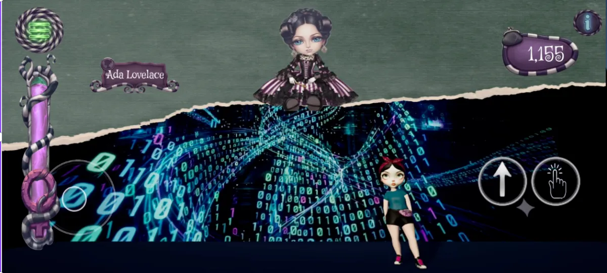

Una mujer cada día
Ejemplo de maqueta: así se vería la mujer del día. Elige otra del carrusel con «Ver ficha» y su ficha aparece aquí.
Mujeres de la historia
Toca un panel para girarlo y ver la foto real. Con efectos, se inclina siguiendo el dedo o el ratón.

El juego Feminist
Un videojuego reivindicativo y feminista, cargado de acción, humor y lucha, en el que las grandes mujeres de la historia te apoyan en tu camino.
Actividades
Cada actividad completada ilumina un cristal. Se guarda en tu navegador.
- Memory
- Línea del tiempo
- La mujer en el mundo
- ¿De quién es la frase?
- Pancarta 8M
- Inventos de mujeres
Glosario feminista
Palabras que conviene conocer.
- sororidad
- techo de cristal
- brecha salarial
- micromachismo
Hecha por una mujer en la informática
Esta web y el juego los ha hecho una mujer, en un sector donde las mujeres son una clara minoría. Mireia pasó de la educación a la informática, un trabajo que en su momento ni se había planteado.